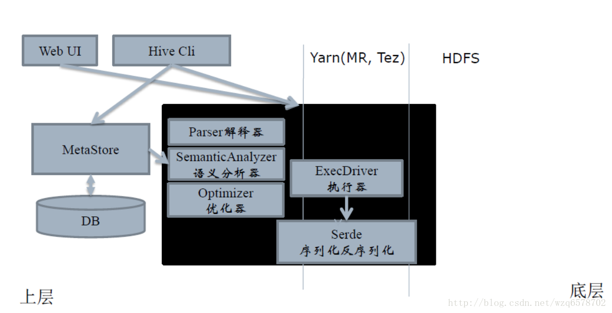
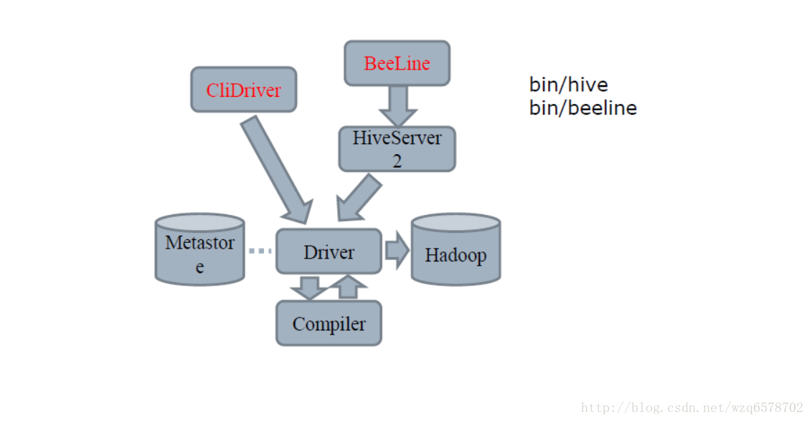
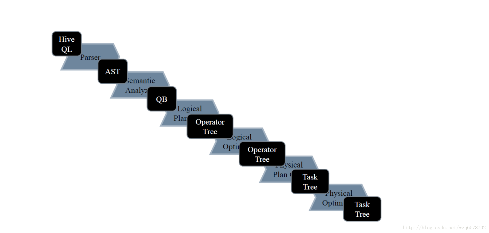
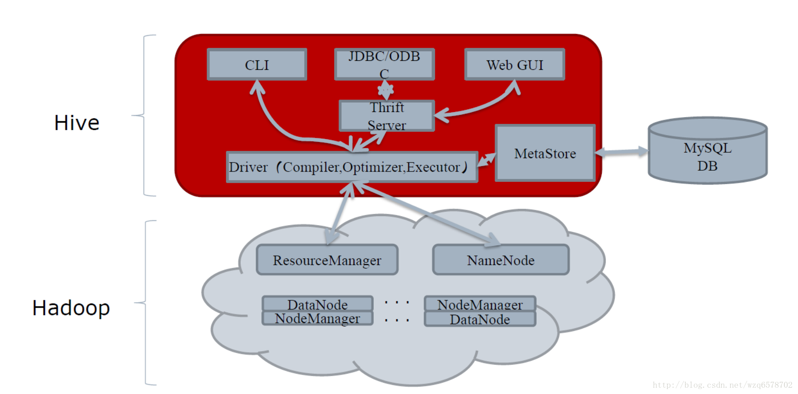
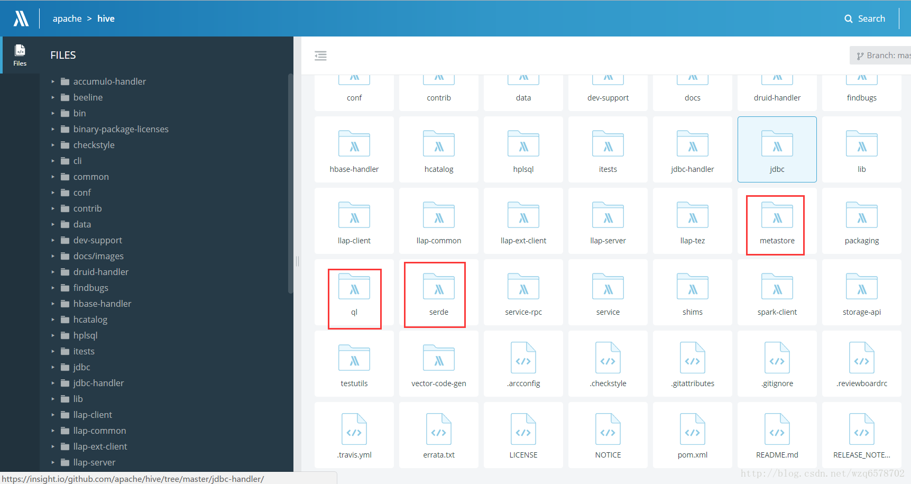
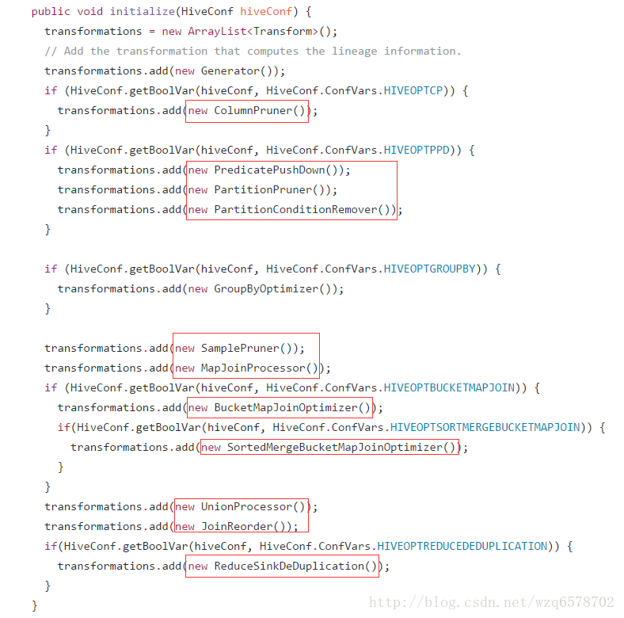
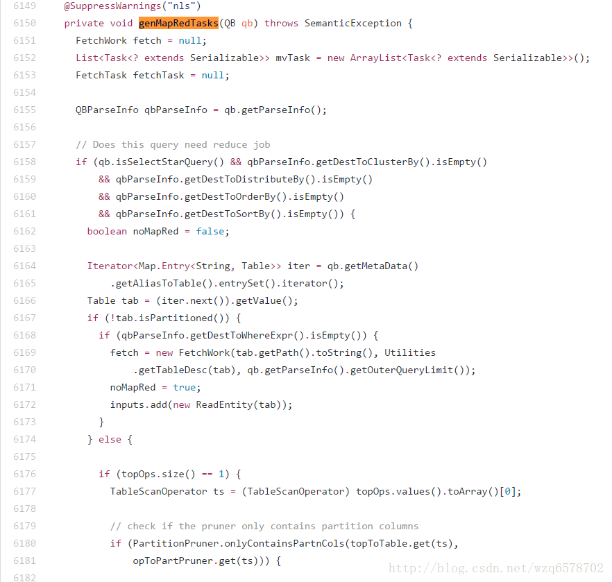
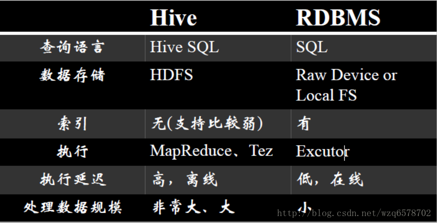

什么是Hive？
数据仓库：存储、查询、分析大规模数据
SQL语言：简单易用的类SQL查询语言
编程模型：允许开发者自定义UDF、Transform、Mapper、Reducer，来更简单地完成复杂MapReduce无法完成的工作
数据格式：处理Hadoop上任意数据格式的数据，或者使用优化的格式存储Hadoop上的数据，RCFile，ORCFile，Parquest
数据服务：HiveServer2，多种API访问Hadoop上的数据，JDBC，ODBC
元数据服务：数据什么样，数据在哪里，Hadoop上的唯一标准
Hive和Hadoop的关系

Hive Cli

Compiler的流程
hive简单理解的功能就是把一条sql进行解析成mr任务去给hadoop执行，那么hive的核心就是怎么去解释这条sql：

hive架构

源码在哪里？
三个重要的模块：

HiveParser:
这个类是解析sql的入口
源码位置
入参是一条字符串的sql，输出是一棵树（AST【抽象语法树（abstract syntax tree或者缩写为AST），或者语法树（syntax tree）】），ASTNode 是树的头结点，他有孩子的数组，
1 | public ASTNode parse(String command, Context ctx) |
ASTNode：
ASTNode获取孩子节点的方法：
1 | /* |
接下来是一颗抽象语法树变成一个QB（query block）
SemanticAnalyzer.java （语义分析器），之前老的版本大约将近7000行代码，由于Java一个类的代码行数过多时会出现编译上的问题，现在优化分割了。
需要一个树的根节点ast就能对整棵树进行解析（深度优先搜索）。
1 | ......略........ |
最后生成一个QB：
1 | ..............................略......... |
QB的两个重要变量是 qbp和qbm他们都有QB的引用，这样组成了一棵树。
在analyzeInternal方法中 Operator sinkOp = genPlan(qb); 我们看一下Operator 类的结构：
1 | public abstract class Operator<T extends Serializable> implements Serializable, |
从代码中可以看到Operator 有很多children和parent，由此这是一个有向无环图（DAG）,QB经过genPlan（）方法变成了一个DAG,接下来的Optimizer optm = new Optimizer(); 是逻辑优化器，那么hive有多少逻辑优化器呢？进入Optimizer：

经过这些优化器，sinkOp 变成了一个改写的Operator ，genMapRedTasks(qb);方法是对逻辑优化器进行切分生成一个task有向无环图，以及task的拆分，以及task的物理优化都会在genMapRedTasks（）中进行。

以上逻辑是整个hivesql的编译流程代码的大体脉络。
Hive和数据库RDBMS

Hive数据模型
DataBase
和RDBMS中数据库的概念一致
每一个DataBase都对应的一个HDFS目录
例如：
Hive > create database hugo;
对应的HDFS目录是：
/user/hugo/hive/hugo.db
元数据
对hdfs数据的描述与映射，可以理解为数据的数据。关于hive的学习重点是hive query language手册的翻阅
排序与分发的各种By
与传统关系型数据库最大的区别就是处理数据的能力
这种能力最大的体现就是排序与分发的原理
order by 是全局排序，只有一个reduce，数据量多时速度慢
sort by 是随机分发到一个reduce然后reduce内部排序
distribute by 是根据 distribute by 的字段把相应的记录分发到那个reduce
cluster by是distribute by + sort by的简写
查看查询计划
explain 命令，可以用于查看对应查询而产生的查询计划
例如：
Hive > explian select * from src limit 1;
ABSTRACT SYNTAX TREE:
(TOK_QUERY (TOK_FROM (TOK_TABREF (TOK_TABNAME src))) (TOK_INSERT (TOK_DESTINATION (TOK_DIR TOK_TMP_FILE)) (TOK_SELECT (TOK_SELEXPR TOK_ALLCOLREF)) (TOK_LIMIT 1)))
STAGE DEPENDENCIES:
Stage-0 is a root stage
STAGE PLANS:
Stage: Stage-0
Fetch Operator
limit: 1
常用优化
扫描相关
谓词下推（Predicate Push Down）
列剪裁（Column Pruning）
分区剪裁（Partition Pruning）
关联JOIN相关
Join操作左边为小表
Join启动的job个数
MapJoin
分组Group By相关
Skew In Data
合并 小文件
列剪裁（Column Pruning）
在读数据的时候，只关心感兴趣的列，而忽略其他列，尽量不要写select * from XXX
例如，对于查询：
select a,b from src where e < 10;
其中，src 包含 5 个列 (a,b,c,d,e)，列 c，d 将会被忽略，只会读取a, b, e 列
选项默认为真： hive.optimize.cp = true
分区剪裁（Partition Pruning）
在查询的过程中减少不必要的分区
例如，对于下列查询：
SELECT * FROM T1 JOIN (SELECT * FROM T2) subq ON (T1.c1=subq.c2)
WHERE subq.prtn = 100;
会在子查询中就考虑 subq.prtn = 100 条件，从而减少读入的分区数目。
选项默认为真： hive.optimize.pruner=true
Join操作左边为小表
应该将条目少的表/子查询放在 Join 操作符的左边
原因是在 Join 操作的 Reduce 阶段，位于 Join 操作符左边的表的内容会被加载进内存，将条目少的表放在左边，可以有效减少发生 OOM 错误的几率
Join启动的job个数
如果 Join 的 key 相同，不管有多少个表，都会则会合并为一个 Map-Reduce
一个 Map-Reduce (Tez)任务，而不是 ‘n’ 个
在做 OUTER JOIN 的时候也是一样
INSERT OVERWRITE TABLE pv_users
SELECT pv.pageid, u.age FROM page_view p
JOIN user u ON (pv.userid = u.userid)
JOIN newuser x ON (u.userid = x.userid);
join不支持不等值连接
!= <> 在join的on条件中不支持
select …. from ….
join ….
on (a.key != b.key);
为什么？
想象一下a.key是不均匀的，加入一共1亿条数据，只有一条数据的key是1，其他的都是0，这样会撑爆一个节点。而且回去其他机器找数据是找不到的。
Group By - Skew In Data
主要关注的是数据倾斜
hive.groupby.skewindata = true
当选项设定为 true，生成的查询计划会有两个 MR Job。
第一个 MR Job 中，Map 的输出结果集合会随机分布到 Reduce 中，每个 Reduce 做部分聚合操作，并输出结果，这样处理的结果是相同的 Group By Key 有可能被分发到不同的 Reduce 中，从而达到负载均衡的目的；
第二个 MR Job 再根据预处理的数据结果按照 Group By Key 分布到 Reduce 中（这个过程可以保证相同的 Group By Key 被分布到同一个 Reduce 中），最后完成最终的聚合操作
合并小文件
合并功能会增加任务运行时间。
合并操作的性能很大程度上取决于“单个reduce端输出文件大小”。Reduce端的输出越大，耗时越长。
合并操作会对每个Hive任务增加一次MapReduce任务。
小文件越多，读取metastore的次数就越多，sql的解析变慢，而且小文件对hadoop伤害很大。hadoop不怕文件大，就怕文件小而且多，这样文件的映射在namenode中就多，namenode负载过大，为此hive对小文件进行合并。
SerDe
SerDe 是 Serialize/Deserilize 的简称，目的是用于序列化和反序列化。
序列化（往磁盘上写）的格式包括：
分隔符（tab、逗号、CTRL-A）
Thrift 协议
反序列化（往内存里读）：
Java Integer/String/ArrayList/HashMap
Hadoop Writable 类
用户自定义类
何时考虑增加新的SerDe
用户的数据有特殊的序列化格式，当前的 Hive 不支持，而用户又不想在将数据加载至 Hive 前转换数据格式
用户有更有效的序列化磁盘数据的方法
例子-使用RegexSerDe
CREATE TABLE apache_log(
host STRING, identity STRING, user STRING,
time STRING, request STRING, status STRING,
size STRING, referer STRING, agent STRING)
ROW FORMAT SERDE ‘org.apache.hadoop.hive.contrib.serde2.RegexSerDe’
WITH SERDEPROPERTIES
( “input.regex” = “([^ ]) ([^ ]) ([^ ]) (-|\^\*\]) ([^ "]|"[^"]") (-|[0-9]) (-|[0-9])(?: ([^ "]|"[^"]") ([^ "]|"[^"]*"))?”,
“output.format.string” = “%1$s %2$s %3$s %4$s %5$s %6$s %7$s %8$s %9$s”
) STORED AS TEXTFILE;